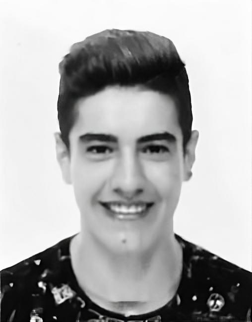
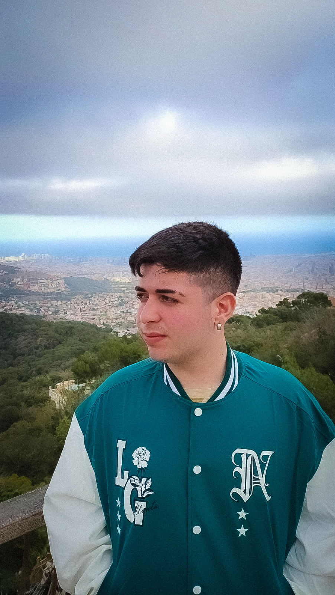

Kevin Meler Muñoz
És un membre actiu del nostre equip. Amb la seva passió per Valorant i la seva habilitat tàctica, Kevin aporta una gran visió estratègica al nostre grup.La seva dedicació i compromís són exemplars, sempre treballant dur per millorar el nostre rendiment col·lectiu. La seva capacitat per comunicar-se de manera clara i efectiva fa que sigui un actiu valuós en les nostres operacions diàries. Amb el seu esforç constant i la seva determinació, Kevin és un pilar fonamental del nostre equip.

Eloy Diaz Muñoz
És un membre destacat del nostre equip amb una gran passió pel món de Valorant.La seva habilitat tècnica i la seva capacitat per adaptar-se a diferents situacions el converteixen en un jugador versàtil i valuós.Amb la seva actitud positiva i el seu compromís amb l'equip, Eloy és un motor d'inspiració per a tots nosaltres.La seva experiència i coneixement del joc ens ajuden a superar els reptes i a millorar constantment.Eloy és un company de confiança i un líder en el camp de batalla, sempre disposat a donar el millor de si mateix per aconseguir els nostres objectius col·lectius.

Juanjo Conejo Hernandez
És una peça clau del nostre equip, amb una gran destresa i experiència en el món de Valorant.La seva presència tranquil·la i el seu domini del joc el converteixen en un jugador impressionant en el camp de batalla.Amb la seva intel·ligència tàctica i la seva capacitat per prendre decisions ràpides, Juanjo és una figura respectada i admirada pels seus companys d'equip.
La seva dedicació i la seva actitud positiva són un exemple per a tots nosaltres, motivant-nos a superar els reptes i a assolir grans èxits junts.Amb Juanjo al nostre costat, estem segurs de poder afrontar qualsevol desafiament que ens enfrontem al món de Valorant.
